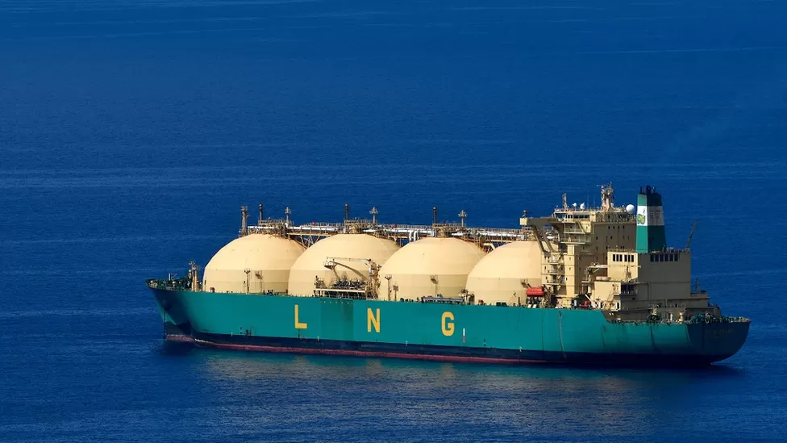
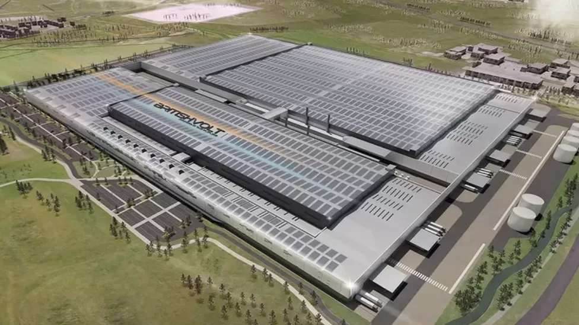

What meaning is technology?
technology, the application of scientific knowledge to the practical aims of human life or, as it is sometimes phrased, to the change and manipulation of the human environment. German 88, versatile 88-millimetre (3.46-inch) multirole artillery piece, developed from 1917 by Germany. It was tested in the Spanish Civil War and was used extensively by the Germans in World War II as a field-artillery piece and as an antiaircraft and antitank gun. It was in fact the most effective antitank gun used by any side in that conflict. Many versions of the German 88 were developed. In the late 1970s there were reports that some were still in service in Czechoslovakia, Finland, Spain, and Yugoslavia. epoch, unit of geological time during which a rock series is deposited. It is a subdivision of a geological period, and the word is capitalized when employed in a formal sense (e.g., Pleistocene Epoch). Additional distinctions can be made by appending relative time terms, such as early, middle, and late. The use of epoch is usually restricted to divisions of the Paleogene, Neogene, and Quaternary periods.

The ships full of gas waiting off Europe’s coast.
Cooled to roughly -160C for transportation, the fossil fuel is in very high demand. Yet the ships remain at sea with their prized cargo.
After invading Ukraine in February, Russia curtailed gas supplies to Europe, sparking an energy crisis that sent the price of gas soaring. That led to fears of energy shortages and eye-watering bills for consumers.
"It's built up for about, I would say, five to six weeks," says Augustin Prate, vice president of energy and commodity markets at Kayrros, one of many observers who has watched the situation unfold.
He and colleagues track ships via AIS (Automatic Identification System) signals, which are broadcast by vessels to receivers, including on satellites.
"Clearly it's a big story," he says.So why are ships loaded with LNG just hanging around Europe, exactly? The answer, as you might have guessed, is a little complicated.
Someone else who has watched the accumulation of vessels is Fraser Carson, a research analyst at Wood Mackenzie. This month, he counted 268 LNG ships on the water worldwide - noticeably above the one-year average of 241. Of those currently at sea, 51 are in the vicinity of Europe.
He explains that European nations plunged into a gas-buying spree over the summer that aimed to fill onshore storage tanks with gas. This was to ensure that heaps of fuel would be available to cover energy needs this winter.

UK battery firm Britishvolt near collapse as it seeks funding.
The firm wants to build a factory in Blyth in Northumberland which would build batteries for electric vehicles.
The government, which had championed the development, had committed a total £100m to Britishvolt for the project.
It is understood the firm wanted to draw down nearly a third of the funding early but the government refused.
It has left the £3.8bn project, which has already been delayed several times, in doubt.
Britishvolt has struggled to find investors to help fund the construction of its so called gigafactory in Blyth which was expected to create 3,000 jobs.
It had been heralded by ministers as an example of "levelling up", a Conservative aim of investing in communities to reduce economic imbalances with other parts of the country.
Blyth made election history in 2019 when it changed from Labour to the Conservatives.
The firm, which is yet to make any revenue, has in recent months held urgent talks to try to secure fresh funds to stay afloat.
A Britishvolt spokesperson said the company was "aware of market speculation" and was "actively working on several potential scenarios that offer the required stability".
1. Virtual Reality (VR) & Augmented Reality (AR)
Both VR and AR are not something entirely new and have been around for a few years now, more recently making their way into different businesses including real estate. Virtual reality and augmented realities have been succeeded by mixed reality, also known as MR, which isn’t worse than them in any sense.

2. Artificial Intelligence (AI), Machine Learning (ML), & Deep Learning (DL)
All three are quickly becoming an integral part of the business world, and though they may seem similar, these technologies are actually different from each other. By the way, they still can’t be human translations, so if you need to translate your content or documents, you can outsource translation with the help of The Word Point and save yourself a headache this way.

3. Progressive Web Apps (PWA)
Progressive web apps or PWAs are, in fact, websites that look and feel like they are apps. Instead of users downloading a mobile app to access all the information and capabilities, they can now simply visit the website.
PWAs use progressive technologies that allow you to create websites that will function almost the same way as mobile apps.